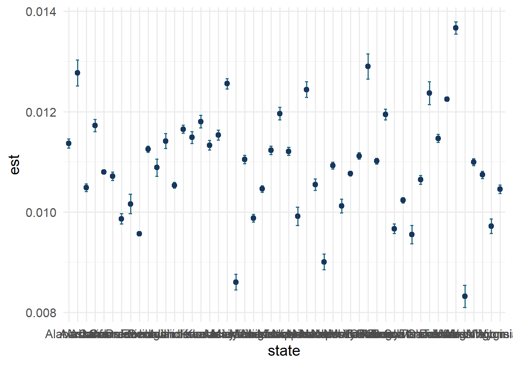
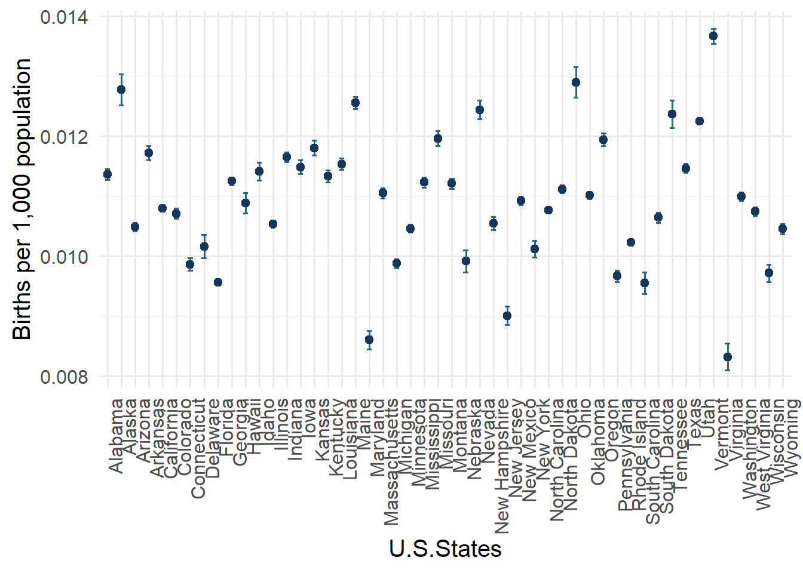
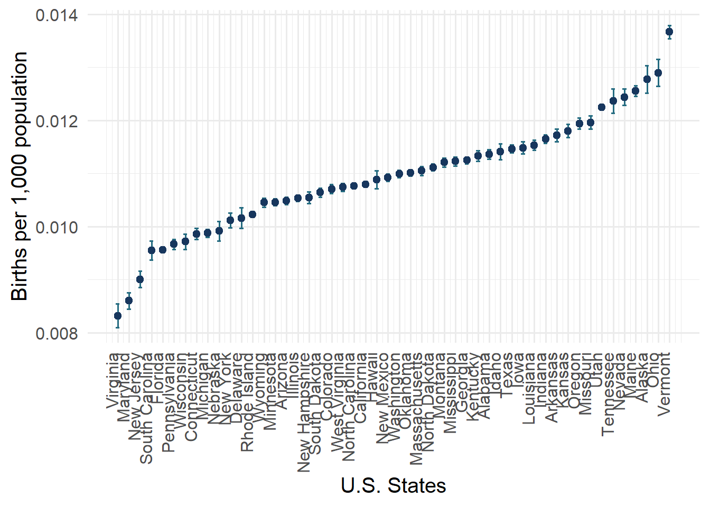
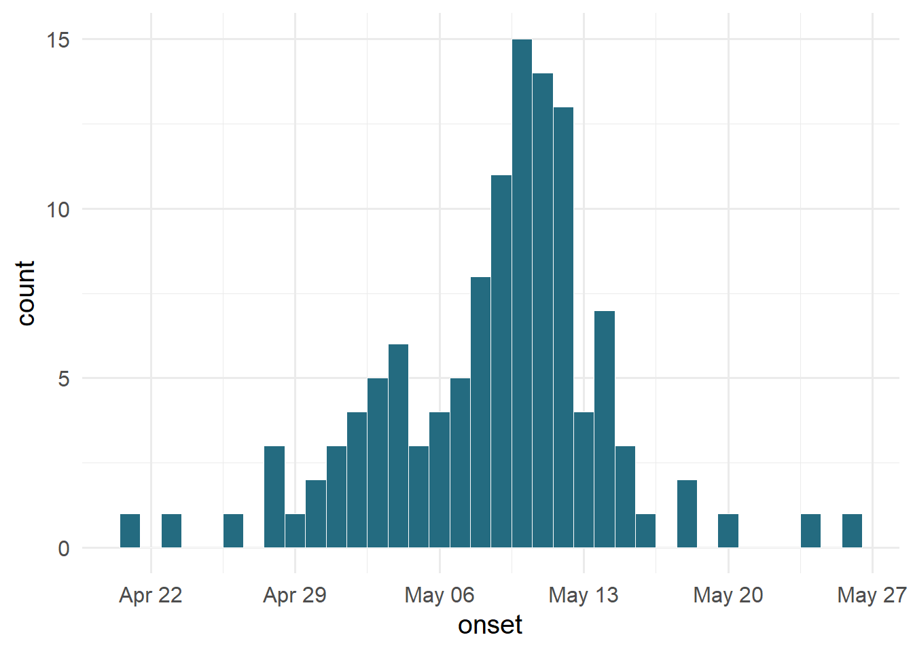
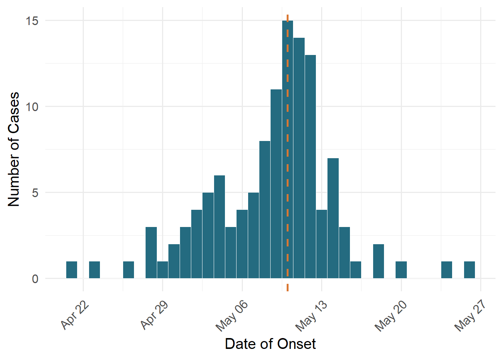
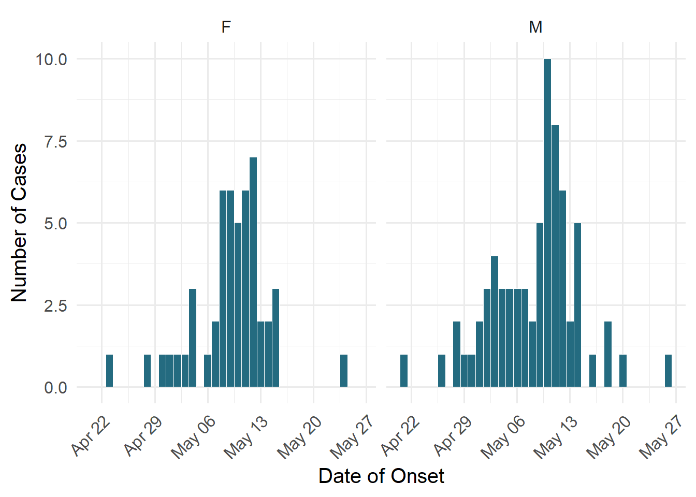
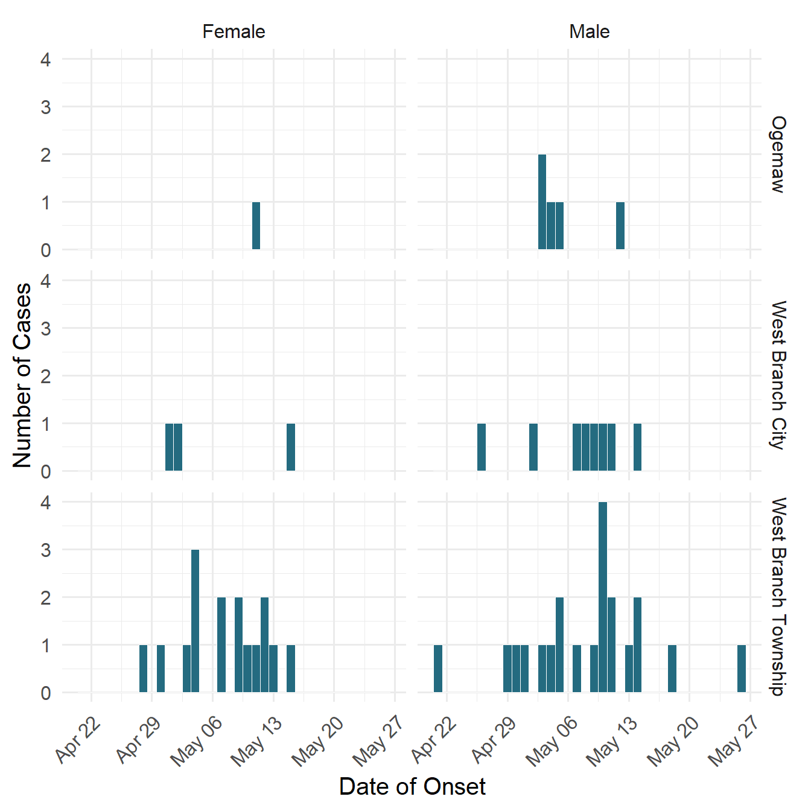

Visualizing outbreak timing and comparing population estimates
OUTBREAK TIMING · CONFIDENCE INTERVALS · GGPLOT2
Seeing the Outbreak Unfold
A well-designed epidemic curve helps reveal when cases occur and how an outbreak evolves. Learn to estimate uncertainty, work with dates, and build clear epidemic curves with ggplot2.
NoteLearning objectives
By the end of this lesson, you should be able to:
Estimate confidence intervals for prevalence or incidence using the epiR package.
Format date variables in R and create epidemic curves using ggplot2.
14.1 Introduction
Epi curves are a fantastic tool for visualizing when an outbreak begins and how it progresses. They are essentially histograms, but we manipulate them for our purposes in epidemiology.
This lecture will help you to see how to estimate confidence intervals for prevalence (or incidence), and then will show you how to build an epi curve using ggplot2.
14.2 Confidence Intervals
Often, we have some measure of prevalence or incidence by some health region, state, or other geography. In these instances, we want to estimate the prevalence (incidence) and affix a confidence interval to the estimate. We will do this using the epiR package. Births are events rather than prevalent cases; here we use the prevalence-style interval function as a computational illustration and label the resulting quantity as births per population.
# install.packages("epiR")library(epiR)#---read in state birth datavital <-read.csv("data/states.csv", stringsAsFactors =TRUE)library(tidyverse)glimpse(vital)
To estimate the prevalence of births using epiR, we need to extract only the necessary columns. To be clear, we do not want a data.frame object, we want a matrix object. Why? Because the author of epiR set up the function that way.
So we will select only the births and population columns from our vital data.frame, then convert that to a matrix using the as.matrix() function:
#---extract only needed variables and convert to a matrixt2 = vital %>%select(births, population) %>%as.matrix()
Now that we have a matrix, we can use the function epi.conf() from the epiR package to estimate birth proportions and their corresponding 95% confidence intervals. This function has a lot of options, but we will focus on the ones we need here:
t2 = our matrix of births and population
ctype="prevalence" = we want proportion estimates
method="exact" = we want exact confidence intervals (other options are available)
N=1000 = we want to scale our proportion estimates to per 1000 population
design=1 = this is for simple random sampling (other options are available)
conf.level=0.95 = we want 95% confidence intervals
We want to put these estimates to good use, so we will append them back to our data.frame. We can do this using the column bind cbind function.
#---append to data.framevital =cbind(vital, cis)# just an FYI, the tidyverse version of this is called dplyr::bind_cols# it would look like this:# library(dplyr)# vital = bind_cols(vital, cis)glimpse(vital)
We would then want to inspect these new proportion estimates. The easiest path would be to graph them. Let’s create a point plot with error bars in ggplot2.
library(ggplot2)#---make the plotggplot(data=vital, aes(x=state, y=est))+# note, state must be a factor!geom_errorbar(aes(ymin=lower, ymax=upper), width=.35, color="#246B80")+geom_point(color="#17365D", size=2)+theme_minimal(base_size =15)

Well, that x-axis is ugly and makes no sense. I can’t read the labels, and it looks like a shotgun took aim at my graph. Let’s clean up the plot a little. We will adjust the x-axis labels (state names) to print on a 90 degree angle and add x and y axis labels.
#---make the plotggplot(data=vital, aes(x=state, y=est))+# note, state must be a factor!geom_errorbar(aes(ymin=lower, ymax=upper), width=.35, color="#246B80")+geom_point(color="#17365D", size=2)+labs(y="Births per 1,000 population",x="U.S.States")+theme_minimal(base_size =15)+theme(axis.text.x =element_text(angle=90, hjust=1)) # fix the axis labels so you can read them

That’s a bit better, but it would be easier to read if these were in order of least to greatest (or vice versa). To do this, we need to order our data. This feels like a tidyverse problem. I will first arrange my data by the prevalence estimate est, then I will create a new variable called rank that will count from 1 until the end of the data.frame for each row:
######################################---create a ranked error barplot---#######################################---sort data by smallest to largestvital = vital %>%arrange(est) %>%# if you wanted from largest to smallest: arrange(desc(est))mutate(rank =row_number()) # add a new variable called rankglimpse(vital)
Now that the data are ranked, we can plot them in ranked order. A few things to notice:
here I specify x=rank and y=est; this will put rank order on the x-axis and proportion estimates on the y-axis
the x-axis is now numerical (rank is continuous), so I specify scale_x_continuous()
I also control the x-axis label inside the scale_x_continuous function, so I removed x="U.S. States" from the labs() function
#---make the plotggplot(data=vital, aes(x=rank, y=est))+geom_errorbar(aes(ymin=lower, ymax=upper), width=.35, color="#246B80")+geom_point(color="#17365D", size=2)+scale_x_continuous(breaks = vital$rank, labels=vital$state, name="U.S. States")+labs(y="Births per 1,000 population")+theme_minimal(base_size =15)+theme(axis.text.x =element_text(angle=90, hjust=1, vjust=0)) # fix the axis labels so you can read them

14.4 Epidemic Curves
Let’s make a true epi curve. Here we will use some old data exploring an outbreak of jaundice in Ohio from 1968.
Here is our workflow:
Download the jaundice data and put it in your project data/ folder
Import the data as j (for jaundice)
Format the date variable (this is always a pain)
Make a plot
14.4.1 Detour: Dates in R
Yes, dealing with dates in RStudio is just as obnoxious as dating is in real life…
We need to format our date variable before we can plot it. Let’s look at the variable Onset_Date in our jaundice data:
#----Read in jaundice dataj <-read.csv("data/jaundice.csv", stringsAsFactors =TRUE)#---look at datahead(j$Onset_Date)
Pay attention to what you are looking at here. The variable Onset_Date is showing up as a factor. We need it to be in Date format.
We are going to change this to the Date format using the lubridate package. In this instance, we are going to use the mdy() function. This stands for month-day-year. We are calling this since our data were entered that way! For example “4/21/1968”. If our data were read in as “1968/4/21” we would use the ymd() function. So put “m”, “d”, and “y” in the right order and your dates will be magical. If not, you’ll never find your date… Let’s convert Onset_Date to a date using the mdy() function:
#---convert to date format#---this is the best packages for dealing with dates#install.packages("lubridate")library(lubridate)j$onset =mdy(j$Onset_Date)head(j$onset)
mdy(j$Onset_Date) tells R to interpret the original values as month-day-year dates. str(j$onset) should then identify a Date vector.
14.4.2 Plotting Our Epi Curve (Histogram)
NotePay Attention to the Binwidth
An epidemic curve counts cases by date of onset. With binwidth = 1 on the date axis, each bar represents one day. Facets allow you to compare the same timeline across groups.
#---histogram---#ggplot(data=j, aes(x=onset))+geom_histogram(binwidth =1, colour ="white", fill ="#246B80", linewidth =0.1)+theme_minimal(base_size =15)

Let’s add some labels and some better labels on the x-axis
#---Nice labels and angle x-axis text---#ggplot(data=j, aes(x=onset))+geom_histogram(binwidth =1, colour ="white", fill ="#246B80", linewidth =0.1)+labs(x ="Date of Onset", y="Number of Cases")+theme_minimal(base_size =15)+theme(axis.text.x =element_text(angle =45, hjust =1))
What if we want to call out some specific date? Like the Mean, Median, or some event (like the introduction of masking, social distancing, testing, etc.)? We can just add a vertical line to the plot. The catch is that we need to add a line to a Date. So we have to get a bit tricky here. We will add this line of code:
This will draw a vertical line. For the example below, it uses May 10, 1968 as the intercept (converted to a Date of course). It will then draw a dashed line (linetype="dashed"), that is slightly thick (lwd=1 means line width of 1) and it will color it #D97732 which is a burnt orange color.
If you want this to persist in the other facet graphs, just add this line (pun!) of code!
#---Nice labels and angle x-axis text---#ggplot(data=j, aes(x=onset))+geom_histogram(binwidth =1, colour ="white", fill ="#246B80", linewidth =0.1)+labs(x ="Date of Onset", y="Number of Cases")+geom_vline(xintercept =as.numeric(ymd("1968-05-10")), linetype="dashed", linewidth=1, color="#D97732") +theme_minimal(base_size =15)+theme(axis.text.x =element_text(angle =45, hjust =1))

14.4.3 Epidemic Curves by a Factor
What if we want to see differences by a factor variable such as Sex? Use facet_grid()!
#---Histogram by Sex---#ggplot(data=j, aes(x=onset))+geom_histogram(binwidth =1, colour ="white", fill ="#246B80", linewidth =0.1) +labs(x ="Date of Onset", y="Number of Cases")+theme_minimal(base_size =15)+theme(axis.text.x =element_text(angle =45, hjust =1))+facet_grid(. ~ Sex)

Why keep the “M” and “F” labels? Let’s change those to “Male” and “Female”. There are lots of ways to do this, but let’s stick to what we know and use the tidyverse::fct_recode() function:
#-- I am choosing to write over my original variable 'Sex' here. No reason for a duplicate#-- I also chose to list ladies first, why? Just because I wanted toj = j %>%mutate(Sex =fct_recode(Sex,"Female"="F","Male"="M"))#checking my worktable(j$Sex)
Female Male
50 70
head(j)
Cases Age Sex City County Onset_Date onset
1 1 11 Male West Branch Township Ogemaw 4/21/1968 1968-04-21
2 101 53 Male Cumming Ogemaw 5/6/1968 1968-05-06
3 2 16 Female Rose Township Ogemaw 4/23/1968 1968-04-23
4 3 34 Male West Branch City Ogemaw 4/26/1968 1968-04-26
5 4 15 Female West Branch Township Ogemaw 4/28/1968 1968-04-28
6 6 15 Male Mills Ogemaw 4/28/1968 1968-04-28
Here it is with nicer labels for the facets:
#---Histogram by Sex---#ggplot(data=j, aes(x=onset))+geom_histogram(binwidth =1, colour ="white", fill ="#246B80", linewidth =0.1) +labs(x ="Date of Onset", y="Number of Cases")+theme_minimal(base_size =15)+theme(axis.text.x =element_text(angle =45, hjust =1))+facet_grid(. ~ Sex)
And just for kicks and giggles, what if we wanted to show the data by City and Sex? The plot will be too distorted with this many levels in the City variable, so I am trimming it down to just a few cities for this example:
################################---Facet plot by 2 factors---#################################---Trimming the data just so it is easier to see---#j_mini = j %>%filter(City=="West Branch Township"| City=="West Branch City"| City=="Ogemaw")#---facet plot by two factorsggplot(data=j_mini, aes(x=onset))+geom_histogram(binwidth =1, colour ="white", fill ="#246B80", linewidth =0.1) +labs(x ="Date of Onset", y="Number of Cases")+theme_minimal(base_size =15)+theme(axis.text.x =element_text(angle =45, hjust =1))+facet_grid(City ~ Sex)

14.5 Your Turn to Practice
Copy the tasks into an R Script and have at it.
# ============================================================# EPI CURVES : STUDENT PRACTICE# Work through the tasks in order in your R Project.# You will need the lubridate, ggplot2, and dplyr packages.# ============================================================# TASK 0: Load the libraries# TASK 1: Load the data/epi_curve_data_country.csv file# TASK 2: Format the variable Illness_Date into an R date format# TASK 3: Plot the epi curve# TASK 4: Make a nice plot with a descriptive title, axis labels, etc.# TASK 5: Plot the epi curve by country (hint: facet_grid())